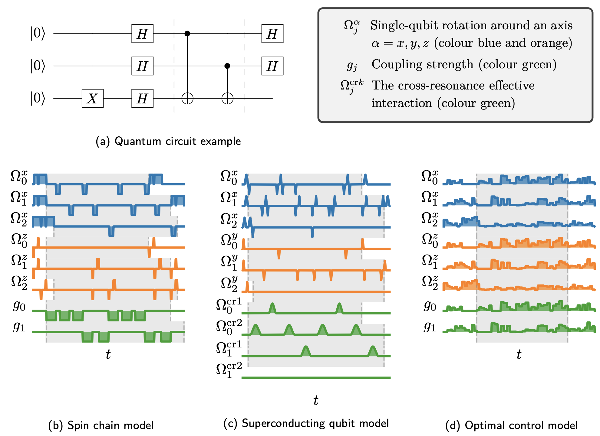

Because evolution is unitary.
On the pulse of open-source quantum simulation with Pulser and QuTiP
Today two papers [H. Silvério & S. Grijalva et al., B. Li et al.] on quantum open source software projects supported by the Unitary Fund are published in the open-access, community-driven journal Quantum. The papers provide information on Pulser and qutip-qip, two Python packages for the pulse-level simulation of quantum programs on quantum computers.
Pulser is a software for controlling and simulating neutral-atom quantum processors. It enables users to control the arrangement of qubits in arbitrary geometries on Pasqal chips and to write sequences of laser pulses to be applied on the system. A custom emulator relying on QuTiP is included to reproduce the expected behavior of the hardware. The Pulser manuscript can be found here.

An example of a pulse sequence for Bell state preparation created in Pulser. Each channel changes its target qubit along the sequence and is populated with pulses addressing a specific energy transition, thus executing the necessary quantum gates. A detailed explanation can be found in section 3.2 of the Pulser paper. H. Silvério & S. Grijalva et al. Quantum 6, 629 (2022).
“We set out to develop Pulser based on the conviction that neutral-atom quantum devices can only be fully put to use when the programmer has hardware-specific knowledge and control. We are very proud to have created an open-source tool that enables anyone to program and simulate neutral-atom devices. Particularly, it opens the door to using the devices as quantum simulators and analog quantum computers, giving users the power to go beyond the quantum circuit model.” said Henrique Silvério, head of the Quantum Libraries team at Pasqal and the main developer behind Pulser.
The second paper illustrates the possibility to simulate noisy quantum processors with the qutip-qip package from the Quantum Toolbox in Python. It bridges the gap between the gate-level circuit simulation and the simulation of quantum dynamics following the master equation for various hardware models. Provided a Hamiltonian model and a map between the quantum gate and control pulses, it can be used to compile the circuit into the native gates of a given hardware, generate the physical model described by control pulses and use QuTiP's dynamical solvers to obtain the full-state time evolution.
The QuTiP QIP manuscript can be found here.

Figure 3 from B. Li et al., Quantum 6, 630 (2022).